Clone and Republic Special Classes
Specialized units trained for specific and high-risk operations within the Republic military.
-
ARC Troopers — Advanced Recon Commandos were elite clones personally selected by Jango Fett's training cadre. They operated independently on high-value missions, often serving as advisors or special assault units for Jedi generals.
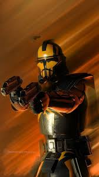 -
ARF Troopers — Advanced Recon Force troopers were light-armored scouts specializing in reconnaissance and fast attacks. Often deployed ahead of main forces, they provided vital intelligence from the front.
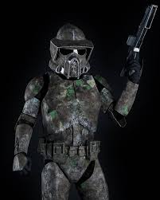 -
Republic Commandos — Bred and trained for black-ops warfare, commandos operated in small squads using teamwork, tech, and brutal efficiency. Delta and Omega squads are the most well-known examples.
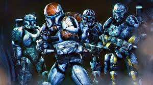 -
Temple Guards — Force-sensitive Jedi loyal to the protection of the Jedi Temple and its sanctity. They wore ceremonial masks and wielded yellow-bladed double lightsabers, serving justice without identity.
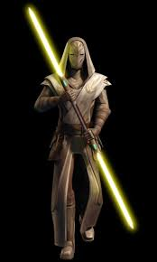 -
Pilots — Clone pilots flew everything from ARC-170 starfighters to capital ships. They received advanced simulation training and fought in major space battles like the Battle of Coruscant and Ryloth.
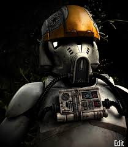 -
Vehicle Drivers — These clones operated ground-based tanks and walkers including the AT-TE and TX-130. Their mechanical skill and battlefield navigation were crucial for Republic land superiority.
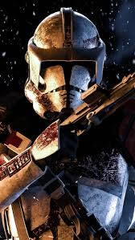 -
Snipers — Experts in stealth and long-range marksmanship, clone snipers operated in both solo and paired teams to eliminate key targets or provide overwatch during infiltration missions.
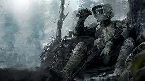 -
Gunners — Deployed for heavy suppressive fire and anti-vehicle roles, gunners manned stationary blasters, artillery, and onboard turrets aboard gunships and tanks.
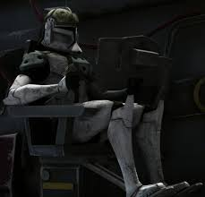 -
Medics — Specially trained to administer field aid under fire, clone medics were invaluable in prolonging unit survivability during long campaigns and large-scale sieges.
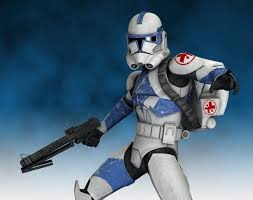 -
Heavy Weapons Troopers — Armed with rotary cannons, missile launchers, and anti-armor gear, these clones were frontline shock units used to punch through Separatist defenses.
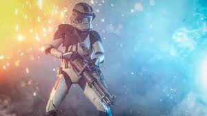 -
Jet Troopers — Equipped with jump packs and enhanced agility, these clones performed rapid vertical assaults and flanking maneuvers in urban and canyon environments.
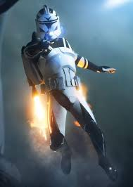 -
Airborne Clone Troopers
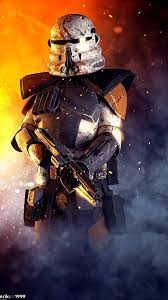Airborne Clone Troopers were specially trained for vertical deployment and harsh terrain combat, often dropped behind enemy lines. Equipped with reinforced armor and unique visors, they were commonly seen during operations on Utapau and other high-risk planetary insertions.
-
Clone Shadow Troopers
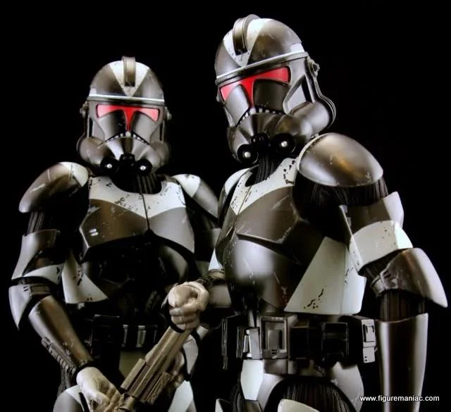Specialized for deep-cover ops and urban stealth. Their armor uses reflective null-layer tech for low-light concealment and they carry multi-spectrum optics.
-
Clone Assassins
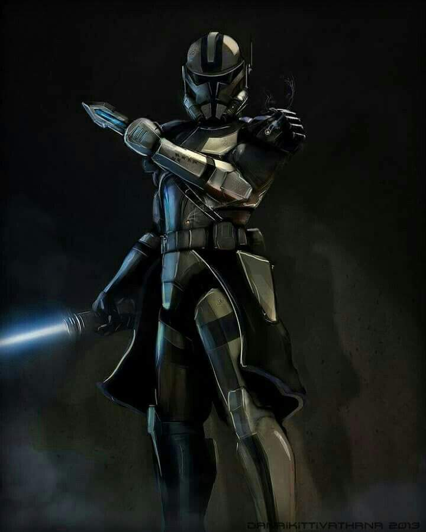Designed for high-risk Jedi elimination. These genetically modified clones use electro-gauntlets, disruptors, and toxin-based tools for fast, lethal strikes.
-
Covert Ops Clone Troopers
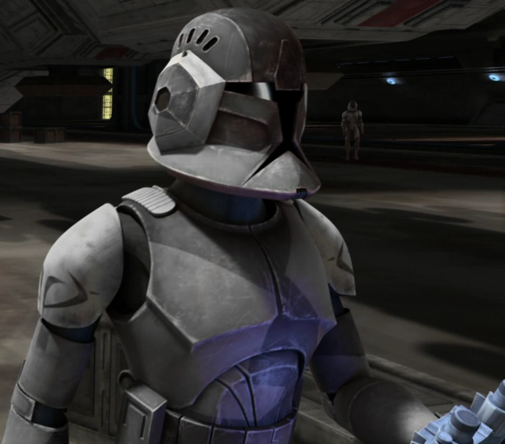Operate in shadow teams deep in enemy territory. Outfitted with matte-black armor, encrypted comms, and exfiltration protocols, they're ghosts on the battlefield.